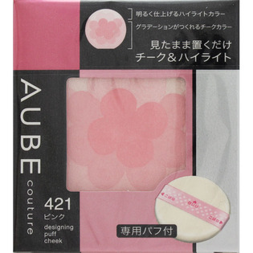
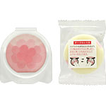

返回列表
产品名称：オーブ クチュール デザイニングパフチーク

花王 オーブ クチュール デザイニングパフチーク ４２１ピンク
メーカー 花王
JANコード 4901301277657
商品の特徴
色：ＰＫ４２１
ふんわり明るい青みのピンク
- 成分・分量
- ＜成分＞
タルク、ステアリン酸エチルヘキシル、ジステアリン酸Al、炭酸Ca、シリカ、ヒドロキシアルキル（C16-18）ヒドロキシダイマージリノレイルエーテル、ナイロン-12、ジメチコン、パルミチン酸エチルヘキシル、カルナウバロウ、メチコン、硫酸Ba、トコフェロール、メチルパラベン、（＋／－）マイカ、酸化鉄、酸化チタン、グンジョウ、水酸化Al、酸化スズ、ホウケイ酸（Ca／Al）黄4、赤226
- 用法及び用量
- ＜使用方法＞
1．パフのリボンの「目じり」を上にして、指を通します。
2．パフの面全体をチークに平らに押しあて、ハイライトもきちんととれるよう、左右に軽くひねるようにしてムラなく色をとります。
※使い始めは、手の甲などで量を調整して下さい。
3．パフの面全体を頬にあて、軽くなじませます。
○つける位置が分かる「パフナビ」
リボンの「目じり」を目尻の下、「こばな」を小鼻の横に合わせると最適な位置に入れられます。